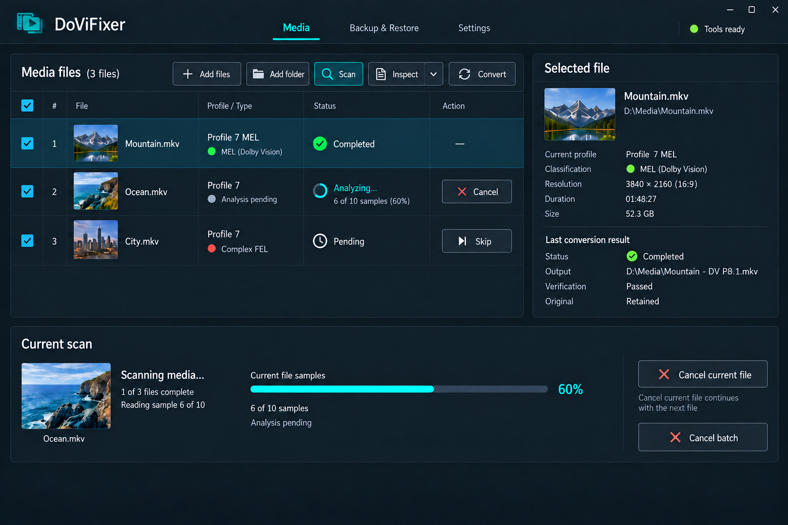
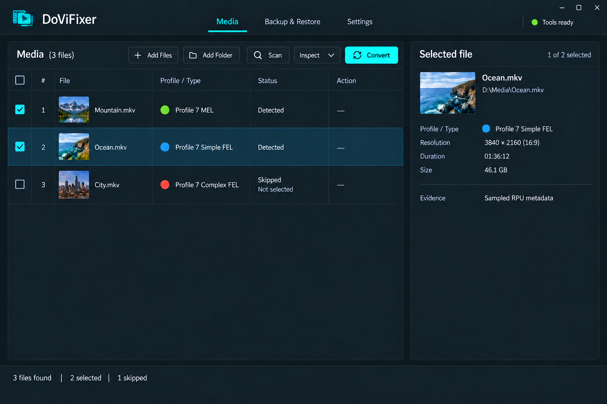
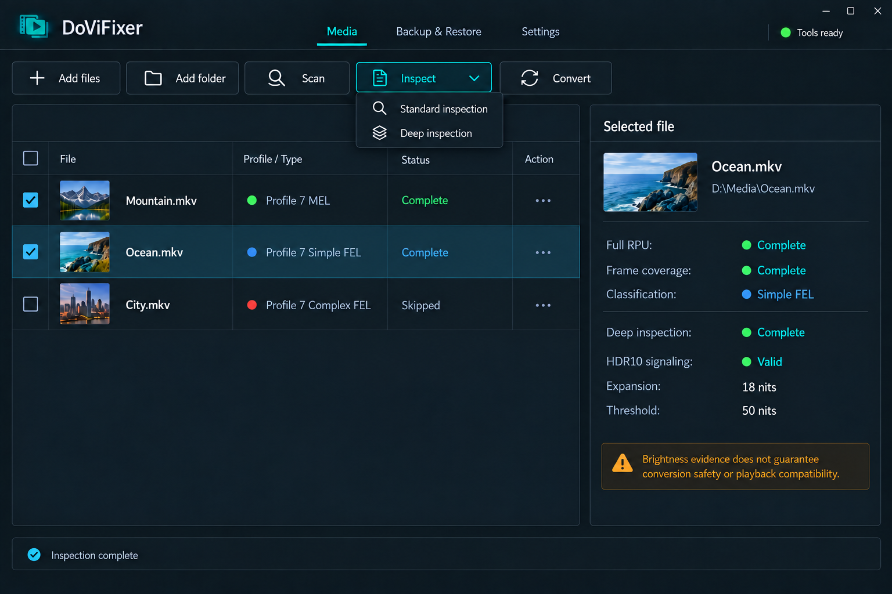
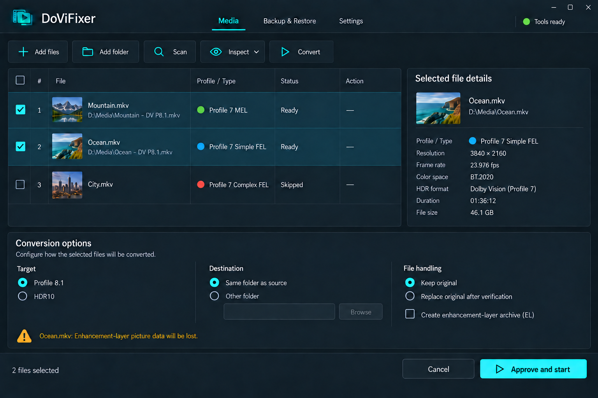
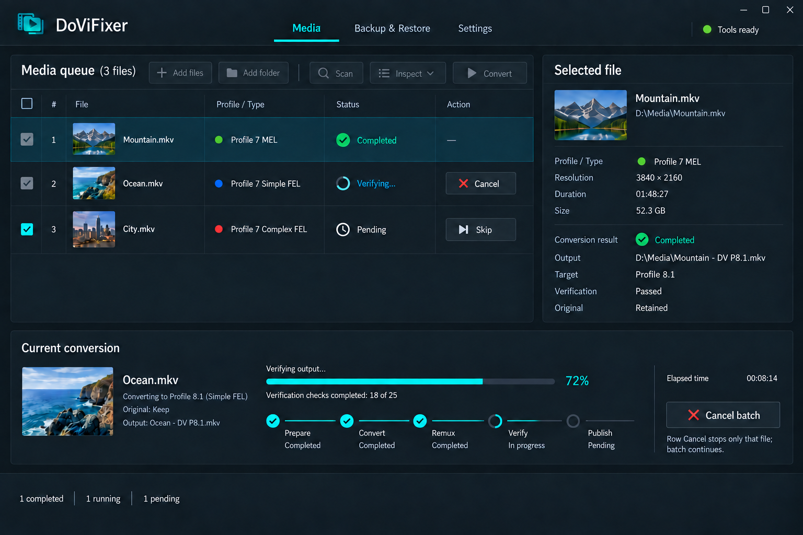

Per-file Cancel and Skip, console classification colors, selected-file results, and conversion options in a bottom panel. These images show independent UI states.
Interaction notes and prompts · Previous full gallery




